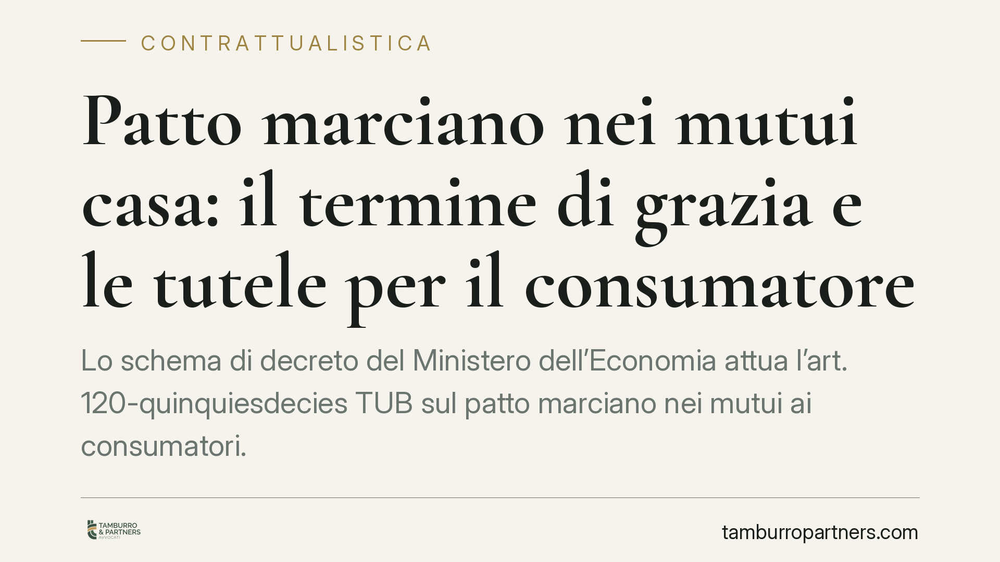

Patto marciano nei mutui casa: il termine di grazia e le tutele per il consumatore
Lo schema di decreto del Ministero dell'Economia attua l'art. 120-quinquiesdecies TUB sul patto marciano nei mutui ai consumatori. Prevede un termine di grazia prima che la morosità rilevi come inadempimento, oltre a regole su consulenza, prima casa e non vessatorietà delle clausole. Un recente parere del Consiglio di Stato ha formulato osservazioni. Lo schema non è ancora definitivo.

Il fatto
Il Ministero dell'Economia e delle Finanze ha predisposto uno schema di decreto attuativo dell'art. 120-quinquiesdecies del Testo Unico Bancario (d.lgs. 385/1993). La norma disciplina il credito immobiliare ai consumatori e consente, a determinate condizioni, il cosiddetto patto marciano.
Sullo schema è intervenuto un recente parere del Consiglio di Stato, con osservazioni di merito. Tra queste, rilievi critici sulla disciplina dell'unica abitazione. Il testo è ancora in fase istruttoria: le indicazioni che seguono vanno lette come anticipazione di un quadro non consolidato.
Inquadramento normativo
Il patto marciano è l'accordo con cui le parti stabiliscono che, in caso di inadempimento, il creditore possa acquisire il bene dato in garanzia, ma con un obbligo essenziale: restituire al debitore l'eventuale eccedenza tra il valore del bene e il debito residuo.
Qui sta la differenza con il patto commissorio, vietato dall'art. 2744 del Codice civile. Il patto commissorio consente al creditore di trattenere il bene a prescindere dal suo valore, lucrando l'eccedenza. Il patto marciano è ammesso proprio perché neutralizza quello squilibrio tramite la stima e la restituzione del surplus.
L'art. 120-quinquiesdecies TUB àncora l'attivazione del meccanismo a una soglia qualificata di morosità. Secondo la normativa primaria, l'inadempimento rilevante è legato al mancato pagamento di un numero predeterminato di rate mensili; lo schema di decreto introduce inoltre un termine di grazia prima che la morosità produca gli effetti più gravosi. L'esatta formulazione del termine e delle soglie dipenderà dal testo definitivo del decreto.
Implicazioni pratiche
Le ricadute variano a seconda del soggetto coinvolto.
Per il consumatore. Il termine di grazia offre una finestra per rimediare al ritardo prima che scattino le conseguenze sulla casa. Restano centrali due presidi: la restituzione dell'eccedenza di valore e la tutela rafforzata quando l'immobile è l'unica abitazione. Proprio su quest'ultimo punto il parere del Consiglio di Stato ha segnalato criticità, chiedendo maggiore chiarezza.
Per le banche. Lo schema impone obblighi di consulenza e informazione a monte, oltre a vincoli sulla redazione delle clausole, che non devono risultare vessatorie. Il meccanismo marciano, se correttamente strutturato, può rappresentare uno strumento di recupero alternativo all'esecuzione immobiliare ordinaria, ma a condizione di rispettare stima, restituzione del surplus e trasparenza.
Per i notai. Cresce il ruolo di controllo in sede di stipula: verifica della corretta configurazione del patto, della distinzione rispetto al divieto di patto commissorio e della non vessatorietà delle clausole inserite nel contratto.
Cosa fare in concreto
- Leggi la clausola marciana prima di firmare. Individua come viene stimato il valore del bene e con quali modalità ti verrà restituita l'eventuale eccedenza rispetto al debito.
- Verifica le soglie di inadempimento. Chiedi che il contratto espliciti quante rate di ritardo attivano il meccanismo e come opera il termine di grazia previsto dallo schema di decreto.
- Controlla la tutela sull'unica abitazione. Accertati che il contratto rifletta le garanzie specifiche per l'immobile adibito a residenza, tenendo conto che la disciplina è ancora in evoluzione.
- Conserva ogni comunicazione sulla morosità. Date e contenuti dei solleciti sono rilevanti per calcolare correttamente il decorso del termine di grazia.
- Richiedi una verifica professionale della non vessatorietà. È opportuno sottoporre la clausola a un controllo tecnico prima della sottoscrizione.
Attenzione: poiché lo schema non è definitivo, i termini e le soglie qui richiamati potranno cambiare. Prima di assumere decisioni, verifica il testo del decreto effettivamente in vigore.
Disclaimer
Contributo informativo a cura di Tamburro & Partners - Avv. Giuseppe Tamburro. Non costituisce parere legale.
Ogni contratto ha il suo equilibrio.
Se vuoi una revisione delle clausole o una redazione su misura, scrivi allo studio. Ti rispondiamo entro un giorno lavorativo.